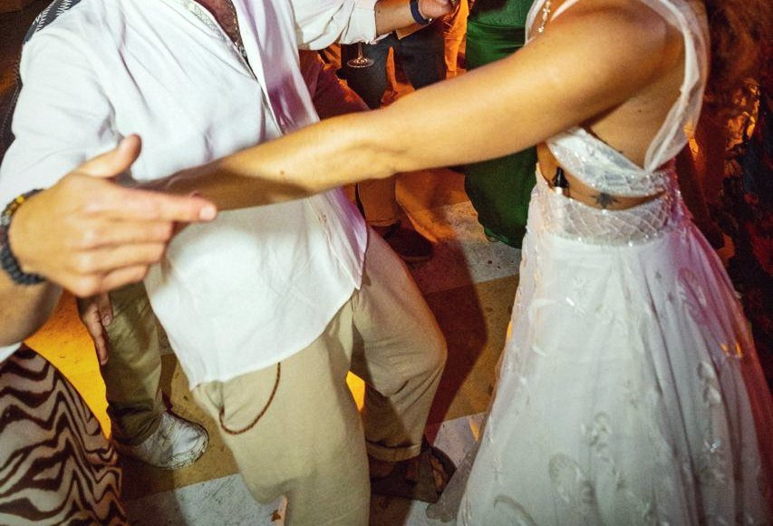

Celebraciones
Nos encargamos desde el catering a los demás aspectos de tu evento
Nos hacemos cargo de la cocina, el servicio y el montaje para que la celebración avance a su ritmo, desde la recepción hasta el último baile.
- Matrimonios
- Aniversarios
- Cumpleaños
- Celebraciones privadas